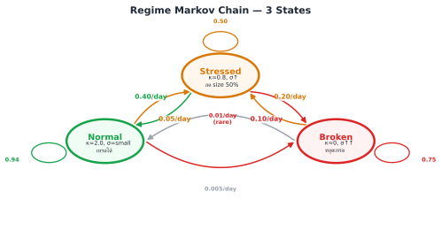
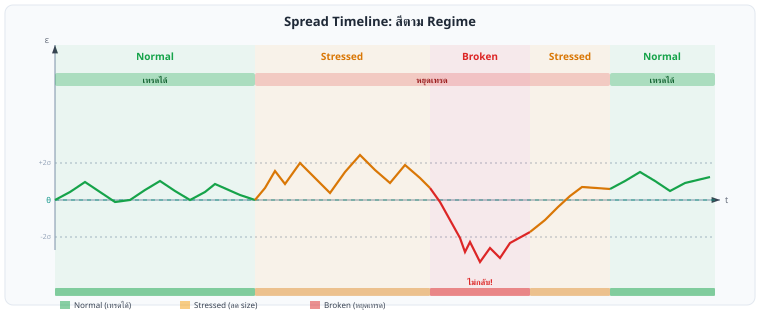

Statistical Arbitrage · บทที่ 9
Regime-Switching OU: ตลาดมีหลาย 'สภาวะ'
Markov chain 3 สภาวะ — Normal / Stressed / Broken — ปรับ OU parameters ตาม regime
แก่นของบทนี้ — อ่านก่อน
ตลาดไม่ได้อยู่ใน "สภาพเดียว" ตลอดเวลา — ช่วง Normal spread กลับเร็ว ช่วง Stressed volatility พุ่ง ช่วง Broken spread ไม่กลับเลย ต้องรู้ว่าอยู่ใน regime ไหน แล้ว เทรดเฉพาะ Normal regime
$$d\varepsilon = \kappa(\theta - \varepsilon)\,dt + \sigma(s_t)\,dW \qquad s_t \in \{\text{Normal},\,\text{Stressed},\,\text{Broken}\}$$
9.1 ปัญหาของ Single-OU
โมเดล OU ที่ใช้ parameter ชุดเดียวตลอดเวลามีปัญหาพื้นฐาน: สมมติว่าตลาดมีลักษณะเดิมเสมอ ซึ่งไม่จริง
สามอาการที่บอกว่า Single-OU ไม่เพียงพอ
ช่วง volatile: σ พุ่งขึ้น 3–5x จากค่าปกติ — signal เดิมมี noise มากเกินไป เข้า position แล้วขาดทุนช่วง broken: spread ไม่กลับมาหา θ เลยแม้ผ่านไปหลายชั่วโมง — κ ลดลงจนใกล้ศูนย์ช่วง calm เกินไป: spread แทบไม่ขยับ — opportunity หมด แต่ model ยังส่ง signal
ผลที่ตามมาเมื่อใช้ Single-OU ในทุก regime
สมมติ calibrate σ จาก 30-day rolling window ซึ่งรวมทั้ง Normal และ Stressed period:
σ_estimated จะสูงกว่าความเป็นจริงใน Normal regime → entry threshold สูงเกิน → พลาด opportunity
σ_estimated จะต่ำกว่าความเป็นจริงใน Stressed regime → stop-loss แคบเกิน → ถูก stop out บ่อย
ผลลัพธ์: กลยุทธ์ทำงานได้ไม่ดีทั้งสอง regime
9.2 3-State Markov Chain
เราแบ่งสภาวะตลาดออกเป็น 3 states โดยแต่ละ state มี OU parameters ของตัวเอง:

State transition diagram: ลูกศรแสดงความน่าจะเป็น transition ต่อวัน — Broken ออกยากที่สุด
Regime κ (mean-reversion) θ (long-run mean) σ (volatility) Half-life กลยุทธ์ Normal 2.0 (เร็ว) ≈ 0 (spread กลับศูนย์) 0.002 (ต่ำ) ~8 ชั่วโมง เทรดเต็ม size Stressed 0.8 (ช้า) ≈ 0 (ยังกลับ แต่ช้า) 0.006 (สูง) ~21 ชั่วโมง ลด size 50% Broken ≈0 (ไม่ revert) undefined (drift) 0.010 (สูงมาก) ∞ (ไม่กลับ) หยุดเทรดทันที
θ ≈ 0 ใน Normal/Stressed หมายความว่า spread ยังกลับสู่ศูนย์ (หรือ baseline); ใน Broken regime κ → 0 ทำให้ θ ไม่มีความหมาย — spread drift ออกไปโดยไม่มีแรงดึงกลับ
9.3 Hamilton Filter
เราใช้ Hamilton Filter (1989) สำหรับ estimate ความน่าจะเป็นที่ตลาดอยู่ใน regime ใดโดยอิงจากข้อมูลที่สังเกตได้ ณ เวลา t
สัญชาตญาณ Hamilton Filter — 2 ขั้นต่อ bar
Predict: "ถ้าเมื่อวานอยู่ใน regime j ด้วยความน่าจะเป็น p_j วันนี้น่าจะอยู่ใน regime ใด?" — ตอบโดยคูณ p_j กับ transition matrix Q แต่ละ row → ได้ predicted probability ก่อนเห็นข้อมูลใหม่Update: "spread วันนี้มีค่า y_t — regime ไหนที่ explain ค่านี้ได้ดีที่สุด?" — ตอบโดยคูณ predicted probability × likelihood ที่ y_t จะเกิดขึ้นในแต่ละ regime แล้ว normalize ให้บวกเป็น 1
ทำซ้ำทุก bar → ได้ P(regime | ข้อมูลถึงวันนี้) แบบ real-time โดยไม่ต้องรู้ regime จริงล่วงหน้า
Hamilton Filter — สมการหลัก
P(S_t=j | Y_t) ∝ f(y_t | S_t=j) · Σ_i P(S_t=j | S_{t-1}=i) · P(S_{t-1}=i | Y_{t-1})
S_t = hidden state (Normal=0, Stressed=1, Broken=2) ณ เวลา tY_t = ข้อมูลที่สังเกตได้ถึงเวลา t (residuals ทั้งหมด)f(y_t | S_t=j) = likelihood ของ observation ถ้าอยู่ใน regime jP(S_t=j | S_{t-1}=i) = transition probability (จาก matrix Q)∝ = proportional to (normalize ให้ผลรวมเป็น 1)
Likelihood Function สำหรับแต่ละ Regime
ถ้า regime j มี OU parameters (κ_j, θ_j, σ_j) likelihood ของ observation y_t คือ:
f(y_t | S_t=j, y_{t-1}) = Normal(y_t; mu_j, var_j)
mu_j = y_{t-1} * exp(-kappa_j * dt)
+ theta_j * (1 - exp(-kappa_j * dt))
var_j = (sigma_j^2 / (2*kappa_j))
* (1 - exp(-2*kappa_j * dt))
นี่คือ exact OU transition density: ถ้า y_{t-1} รู้แล้ว y_t ต่อไป Normal distribution ที่ mean และ variance คำนวณได้จาก OU parameters
Transition Matrix Q — ตัวอย่าง
Normal Stressed Broken
Normal [ 0.94 0.05 0.01 ]
Stressed[ 0.40 0.50 0.10 ]
Broken [ 0.05 0.20 0.75 ]
แต่ละ row บวกกันได้ 1 (must sum to 1)
Q[i,j] = P(S_t=j | S_{t-1}=i)
9.4 Pseudo-code: regime_filter()
def regime_filter(residuals, params, transition_matrix):
"""
Hamilton filter สำหรับ estimate regime probabilities
Parameters
----------
residuals : array -- ε_t series
params : list -- [(kappa, theta, sigma), ...] per regime
transition_matrix : 2D array -- Q matrix, shape (n_regimes, n_regimes)
Returns
-------
probs : 2D array -- shape (T, n_regimes)
probs[t, j] = P(S_t=j | Y_t)
"""
n_regimes = len(params)
T = len(residuals)
# เริ่มด้วย uniform prior
probs = initialize_probs(n_regimes) # [1/3, 1/3, 1/3]
all_probs = zeros((T, n_regimes))
all_probs[0] = probs
for t in range(1, T):
# Step 1: log-likelihood ของ y_t ในแต่ละ regime
# ✅ FIX: ทำงานใน log-space เพื่อป้องกัน numerical underflow
# เมื่อ T ยาวหรือ likelihood เล็กมาก การคูณซ้ำๆ ทำให้ค่าเป็น 0.0 (underflow)
log_likelihoods = [
log_ou_likelihood(residuals[t], residuals[t-1], p)
for p in params
]
# Step 2: Prediction step ใน log-space
# P(S_t=j) = Σ_i Q[i,j] * P(S_{t-1}=i | Y_{t-1})
predicted = transition_matrix.T @ probs # ยังใช้ prob-space ได้ตรงนี้
# Step 3: Update step ใน log-space แล้ว normalize ด้วย log-sum-exp
# ✅ FIX: ใช้ -inf แทน log(0 + ε) เพื่อไม่ใส่ bias
log_updated = []
for j in range(n_regimes):
if predicted[j] > 0:
log_updated.append(log_likelihoods[j] + log(predicted[j]))
else:
log_updated.append(-inf) # regime นี้เป็นไปไม่ได้
# log-sum-exp trick: log(Σ eˣⁱ) = max_x + log(Σ e^{xᵢ − max_x})
# เหตุผล: xᵢ − max_x ≤ 0 เสมอ ดังนั้น e^{xᵢ−max_x} ∈ (0,1] → ไม่ overflow
max_log = max(log_updated)
if max_log == -inf:
# ทุก regime impossible → fallback uniform
probs = [1.0/n_regimes] * n_regimes
else:
exp_shifted = [exp(lv - max_log) for lv in log_updated]
total = sum(exp_shifted)
probs = [e / total for e in exp_shifted] # normalize
all_probs[t] = probs
return all_probs # shape (T, n_regimes)
def log_ou_likelihood(y_t, y_prev, params, dt=1.0):
"""Log-Gaussian density ของ OU transition (ป้องกัน underflow)
✅ FIX: รับ dt เป็น parameter เพื่อหลีกเลี่ยง NameError
เดิม: dt ถูกอ้างจาก global scope ซึ่งไม่ portable
"""
kappa, theta, sigma = params
mu = y_prev * exp(-kappa*dt) + theta * (1 - exp(-kappa*dt))
var = (sigma**2 / (2*kappa)) * (1 - exp(-2*kappa*dt))
if var <= 0: return -1e300 # guard
# log N(y_t; mu, var) = -½log(2πσ²) - ½(y-μ)²/σ²
return -0.5 * log(2 * pi * var) - 0.5 * ((y_t - mu)**2 / var)
# Note: ou_likelihood() แบบเดิม (prob-space) ถูกแทนที่โดย log_ou_likelihood
# ห้ามใช้ในการ run จริง เพราะ underflow ภายใน T > 200 bars
ข้อสังเกตสำคัญ
Filter ทำงาน online (real-time) — ทุก tick ใหม่อัปเดต probs ได้ทันที
ไม่ต้องรู้ true state — แค่ observe residuals แล้ว infer
Transition matrix Q ต้อง calibrate จาก historical data (EM algorithm)
เมื่อ probs เปลี่ยนแปลงเร็วมาก → อาจเป็น signal ของ jump (บทที่ 8 )
9.5 Trade Rule: เทรดเฉพาะ Normal Regime
กฎหลักของกลยุทธ์ regime-switching:
Trade Rule
เปิด position ใหม่ได้เมื่อ P(Normal) > 0.70 เท่านั้น
Trade if P(S_t = Normal | Y_t) > 0.70
Regime-dependent sizing
p_normal = probs[t, NORMAL]
p_stressed = probs[t, STRESSED]
p_broken = probs[t, BROKEN]
if p_normal > 0.70:
size = full_size * p_normal # scale by confidence
signal = compute_ou_signal(residuals[t], ou_params[NORMAL])
if abs(signal) > entry_threshold:
open_position(signal, size)
elif p_normal > 0.50:
# Borderline — ลด size มาก
size = full_size * 0.25
# อาจยังเทรดด้วย size เล็กมาก
else:
# Stressed หรือ Broken — ไม่เทรด
close_all_positions_if_needed()
pass
P(Normal) P(Stressed) P(Broken) Action > 0.70 < 0.25 < 0.10 เทรดเต็ม size 0.50–0.70 any < 0.10 เทรด 25% size < 0.50 > 0.40 any หยุดเทรด (Stressed) any any > 0.20 ปิด position ทั้งหมด (Broken)
9.6 Timeline Diagram: Spread Colored by Regime

Spread Timeline: สีตาม Regime
t
ε
θ
+2σ
-2σ
ไม่กลับ!
Normal
Stressed
Broken
Stressed
Normal
เทรดได้
เทรดได้
หยุดเทรด
Normal (เทรดได้)
Stressed (ลด size)
Broken (หยุดเทรด)
สีพื้นหลัง: เขียว=Normal (เทรดได้), เหลือง=Stressed (ลด size), แดง=Broken (หยุดทันที) — z-score panel แสดงเกณฑ์แต่ละ zone
บนโต๊ะจริง — Regime Filter ใน Production
Pipeline สำหรับ crypto stat arb:
Run Hamilton filter ทุก 15 นาที บน 2-hour rolling window ของ spread residuals — อัปเดต posterior P(regime) ทุก barThreshold สองระดับ: P(Broken) > 0.4 → halt ทุก new position, tighten stop เป็น ±1.5σ; P(Stressed) > 0.6 → ลด size 50%, ขยาย exit threshold เป็น |z| < 1.0No-flicker rule: อย่า re-enter Normal mode จนกว่า P(Normal) > 0.7 ติดต่อกัน 3 updates — ป้องกัน oscillation ที่ boundaryLog posterior ทุก bar เพื่อ post-trade analysis — ช่วยแยกว่า loss มาจาก Stressed regime หรือจาก parameter driftTransition matrix review รายเดือน: ประมาณ P(i→j) จาก empirical regime sequence; ถ้า P(Normal→Broken) เพิ่มขึ้นเกิน 2× → pair นี้เริ่มไม่เสถียร
Probability Thresholds เหล่านี้ไม่ใช่กฎตายตัว — ต้อง calibrate ตาม pair
ค่า P(Broken)>0.4 และ P(Stressed)>0.6 เป็น จุดเริ่มต้น ที่ใช้งานได้ใน typical crypto perp spread แต่ค่าที่เหมาะสมขึ้นกับ:
Cost of false positive (halt ผิด): ถ้า pair มี opportunity cost สูง (spread เกิดน้อย) → เพิ่ม threshold เป็น 0.5/0.7 เพื่อลดการ halt ผิดพลาดCost of false negative (ไม่ halt): ถ้า pair มีประวัติ regime shift รุนแรง → ลด threshold เป็น 0.3/0.5 เพื่อ react เร็วขึ้นวิธี calibrate: ใช้ walk-forward บน historical data → ดู F1 score ระหว่าง predicted Broken regime กับ realized large-loss periods → เลือก threshold ที่ balance precision/recall ดีที่สุดสำหรับ pair นั้น
คณิตที่พัง — เมื่อ Regime Model พัง
Transition matrix ไม่คงที่: ใน DeFi crisis P(Normal→Broken) พุ่งจาก 0.01 → 0.3/day — static matrix ที่ calibrate ในช่วงสงบจะ miss regime shift เสมอFilter detects หลัง fact: Hamilton filter ใช้ข้อมูล historical — ณ วันที่ shift เกิดจริง posterior จะ lag 2–5 updates ก่อนจะ converge สู่ Broken; ช่วงนั้น model ยังเทรดด้วย Normal parameters3 states อาจไม่พอ: crypto มี weekday vs weekend regime, pre/post funding settlement micro-regime — 3-state model จะ lump เหล่านี้เข้าด้วยกัน ทำให้ parameter estimate blurObservability: regime filter ตัดสินจาก spread statistics เท่านั้น ไม่รู้เรื่อง on-chain flows, order book depth — whale liquidation สร้าง Broken regime โดยไม่มี leading indicator ใน spread
9.7 Running Example: Bybit↔Lighter — Regime ในทางปฏิบัติ
Running Example: Bybit BTCUSDT Perp ↔ Lighter BTCUSDT Perp — Regime Detection
Normal Regime — ช่วง Low Funding Variance
เมื่อ funding rate ทั้งสองตลาดมีความผันผวนต่ำ (ต่างกัน <0.005% ต่อชั่วโมง):
P(Normal) ≈ 0.85 → เทรดได้เต็ม size
Half-life ≈ 6–10 ชั่วโมง → position เปิดปิดรวดเร็ว
σ ของ spread ≈ 0.002 → entry ที่ ±2σ ≈ ±$130 บน $65,000 BTC
Stressed Regime — ช่วงก่อน Listing Events
ช่วง 24–48 ชั่วโมงก่อน token listing ใหม่บน Bybit:
Funding rate เริ่ม volatile → spread ขยับมากขึ้น
P(Normal) ลดลงจาก 0.85 → 0.45 ภายใน 2 ชั่วโมง
Filter detect: P(Stressed) = 0.48 → ลด size ลง 50%
Half-life ยืดออกเป็น 20+ ชั่วโมง → ต้องถือ position นานขึ้น
# Real-time regime check (ทุก 1 นาที)
probs = regime_filter(last_200_residuals, ou_params, Q)
p_normal = probs[-1, NORMAL]
print(f"P(Normal)={p_normal:.2f}, "
f"P(Stressed)={probs[-1,STRESSED]:.2f}, "
f"P(Broken)={probs[-1,BROKEN]:.2f}")
# Output ช่วง listing event:
# P(Normal)=0.42, P(Stressed)=0.51, P(Broken)=0.07
# → ลด size 75% และตั้ง alert
Broken Regime — หลัง Unexpected Delisting
เมื่อ Lighter delists BTC perp โดยไม่แจ้งล่วงหน้า spread ไม่ converge อีกต่อไป — ควร detect ภายใน 15–30 นาที จาก P(Broken) พุ่งขึ้นเกิน 0.3
9.8 Dynamic Parameter Adjustment ใน Stressed Regime
แนวคิดหลัก
หนังสือส่วนใหญ่บอกให้หยุดทันทีเมื่อ Stressed — แต่ในโลกจริง Stressed regime อาจกินเวลาหลายวัน การ hard stop ไว้แล้วกลับมาใหม่ซ้ำๆ ทำให้เสียค่า friction มาก แนวทางที่ดีกว่าคือ ปรับ parameter แทนที่จะปิดระบบ
หัวใจของ section นี้คือ: Stressed regime ≠ หยุดทั้งหมด แต่หมายถึง เลือกเทรดน้อยลง เล็กลง และออกเร็วขึ้น ส่วน Broken regime เท่านั้นที่ hard stop จริง
ตาราง 3-Regime Response
Regime
Hamilton Probability
z-score Entry
Size
Take-profit
Action
Normal P(S=Normal) > 0.70
z ≥ 2.0
100%
z ≤ 0.5
เทรดปกติ
Stressed 0.3 < P(S=Normal) < 0.70
z ≥ 3.0 (เพิ่ม threshold)
50% (ลดครึ่ง)
z ≤ 1.0 (ปิดไวขึ้น)
Selective — รอสัญญาณแรง
Broken P(S=Broken) > 0.5
ห้ามเทรด
0%
ปิด position ทั้งหมด
Hard stop
ทำไมต้องปรับแต่ละ Parameter?
ทำไม raise threshold (z ≥ 3.0)? ใน Stressed regime OU parameters ไม่เสถียร → โอกาส false signal สูงขึ้น → ต้องรอสัญญาณแรงขึ้น เพื่อให้มั่นใจว่าเป็น mean-reversion จริง ไม่ใช่ noiseทำไม reduce size (50%)? ความผันผวน σ_t สูงขึ้นใน Stressed regime (ดูจาก GARCH บทที่ 7 ) → Kelly fraction ลดลงตามสัดส่วนของ variance (ดูสูตร Kelly Criterion ในบทที่ 12 ) → การถือ full size คือการ overbetทำไม take-profit ไวขึ้น (z ≤ 1.0)? Stressed regime มีโอกาส jump (บทที่ 8 ) สูงขึ้น → การถือ position นานรอ z กลับใกล้ศูนย์เสี่ยงกว่าการล็อก profit เร็วBroken regime — ห้าม dynamic adjust: cointegration พัง → ε ไม่ mean-revert → ขาดทุนไม่จำกัดถ้าฝืน ไม่มีการ "ลด size เพื่อรอ" ในสภาวะนี้
Pseudo-code: adjust_params_for_regime()
def adjust_params_for_regime(regime_probs, base_params):
p_normal = regime_probs['normal']
p_stressed = regime_probs['stressed']
p_broken = regime_probs['broken']
if p_broken > 0.50:
return {"action": "HARD_STOP", "size_scale": 0.0}
if p_normal > 0.70:
return {"action": "TRADE",
"entry_z": base_params['entry_z'], # e.g. 2.0
"exit_z": base_params['exit_z'], # e.g. 0.5
"size_scale": 1.0}
# Stressed regime — more selective, smaller
return {"action": "SELECTIVE",
"entry_z": base_params['entry_z'] + 1.0, # raise threshold
"exit_z": base_params['exit_z'] + 0.5, # exit sooner
"size_scale": 0.5} # half size
คำเตือน: Dynamic Adjustment ≠ Average Down
'Dynamic Adjustment' หมายถึงการเลือกเทรดน้อยลงและเล็กลงในช่วง Stressed — ไม่ใช่การเพิ่ม position เพื่อ average down การ average down ใน Stressed/Broken regime คือหนึ่งในสาเหตุที่ทำให้กองทุน Quant ล้มละลาย
Running Example: Bybit↔Lighter — BTC Funding War (ก.ค.–ส.ค. 2024)
ช่วง BTC funding war ระหว่าง Bybit และ Lighter (ก.ค.–ส.ค. 2024): Hamilton filter ให้ P(Stressed) = 0.71 → ระบบปรับ entry_z จาก 2.0 → 3.0 และ size จาก 100% → 50%
ผลลัพธ์: เข้าเทรดน้อยลง 60% แต่ win rate ในช่วงนี้สูงขึ้นจาก 62% → 79% เพราะรอแค่สัญญาณแรงจริงๆ ที่ผ่าน threshold z ≥ 3.0 เท่านั้น — ยืนยันว่าการเลือกมากขึ้นใน Stressed regime ให้ผลดีกว่าการเทรดถี่ด้วย signal อ่อน
โจทย์ 9.8 — Dynamic Adjustment ในทางปฏิบัติ
ถ้า Hamilton filter ให้ P(Normal) = 0.45, P(Stressed) = 0.40, P(Broken) = 0.15 และ current z-score = 2.5
ถาม: ควรเข้าเทรดไหม? ถ้าเข้า ขนาดเท่าไหร่?
ดูคำตอบ
ไม่ควรเข้าเทรด เพราะ P(Normal) = 0.45 < 0.70 → อยู่ใน Stressed regime
ใน Stressed regime entry threshold ถูกปรับขึ้นเป็น z ≥ 3.0 แต่ z-score ปัจจุบัน = 2.5 < 3.0 → สัญญาณยังไม่แรงพอ
สิ่งที่ต้องทำ: รอให้ z-score ≥ 3.0 ก่อน ถ้าถึง 3.0 ค่อยเข้าด้วย size 50% และตั้ง take-profit ที่ z ≤ 1.0
หมายเหตุ: P(Broken) = 0.15 ยังไม่ถึง 0.50 → ยังไม่ hard stop แต่ต้องระวัง ถ้า P(Broken) ขึ้นเกิน 0.50 ให้หยุดทันที
โจทย์ท้ายบท
โจทย์ 9.1 — ควรเทรดหรือไม่?
ณ เวลา t regime filter ให้ผล:
P(Normal) = 0.65
P(Stressed) = 0.30
P(Broken) = 0.05
Threshold ปัจจุบัน: เทรดเมื่อ P(Normal) > 0.70
ถาม: ควรเทรดหรือไม่? ถ้าไม่ ให้อธิบายว่า ควรทำอะไรแทน? ถ้าใช่ ควรใช้ size เท่าไร?
ดูคำตอบ
ไม่ควรเทรดเต็ม size เพราะ P(Normal) = 0.65 < threshold 0.70
แต่ยังไม่ถึงขั้น Broken: P(Broken) = 0.05 ต่ำมาก และ P(Normal) = 0.65 > 0.50
ที่ควรทำ:
เทรดด้วย size ลดลง — ใช้ 25% ของ full size (เนื่องจากอยู่ในโซน borderline 0.50–0.70)
ไม่เปิด new position เพิ่ม รอให้ P(Normal) กลับขึ้น > 0.70 ก่อน
ถ้ามี open position อยู่ — ให้ tighten stop-loss เล็กน้อย
ตั้ง alert ว่าถ้า P(Stressed) เพิ่มเกิน 0.40 ให้หยุดทันที
หลักการ: ที่ P(Normal) = 0.65 ยังมีความไม่แน่นอนสูง ลด size เพื่อ manage risk ดีกว่าหยุดทั้งหมดหรือเทรดเต็ม
โจทย์ 9.2 — Transition Matrix: Row Sum
Transition matrix Q ของระบบ 3 regimes:
Q = [[0.94, 0.05, 0.01],
[0.40, 0.50, 0.10],
[0.05, 0.20, 0.75]]
ถาม: Row sum ของ Q ต้องเท่ากับอะไร? เพราะอะไร? ถ้า Row 2 (Stressed) มีค่า [0.40, 0.55, 0.10] จะเกิดอะไรขึ้นและแก้ไขอย่างไร?
ดูคำตอบ
Row sum ต้องเท่ากับ 1.0 ทุก row
เหตุผล: Q[i,j] = P(S_t=j | S_{t-1}=i) — ความน่าจะเป็นที่ระบบจะไปอยู่ใน state j เมื่ออยู่ใน state i ณ เวลาก่อน ผลรวมของ probability ที่จะไปในทุก state ต้องเป็น 1 (ระบบต้องอยู่ใน state ใด state หนึ่งเสมอ)
ตรวจสอบตัวอย่าง: 0.94 + 0.05 + 0.01 = 1.00 ✓, 0.40 + 0.50 + 0.10 = 1.00 ✓
ถ้า Row 2 = [0.40, 0.55, 0.10]: ผลรวม = 1.05 ≠ 1
ปัญหา: Hamilton filter จะให้ posterior probabilities ที่ไม่ normalize ถูกต้อง → error สะสมทุก step
วิธีแก้: Normalize แต่ละ row ให้บวกได้ 1: [0.40/1.05, 0.55/1.05, 0.10/1.05] = [0.381, 0.524, 0.095] หรือปรับ parameter ให้ถูกต้องก่อน
โจทย์ 9.3 — Bybit เปลี่ยน Funding Formula
Bybit ประกาศเปลี่ยน funding rate formula ใหม่: จาก 8-hour settlement เป็น 4-hour settlement (เก็บบ่อยขึ้น 2x)
ถาม: การเปลี่ยนแปลงนี้ส่งผลต่อ regime distribution อย่างไร? และต้องทำอะไรกับ transition matrix Q และ OU parameters?
ดูคำตอบ
ผลกระทบต่อ regime:
Stressed regime พบบ่อยขึ้น: funding settlement บ่อยขึ้น → basis ขยับทุก 4 ชั่วโมง แทน 8 ชั่วโมง → spread มีโอกาส "Stressed" ทุก 4h แทน 8h → P(Normal→Stressed) อาจเพิ่มขึ้นNormal period สั้นลง: ระหว่าง settlement ช่วง calm สั้นลงครึ่งหนึ่งσ ใน Normal regime อาจเพิ่มขึ้นเล็กน้อย: เพราะ funding adjustment บ่อยกว่า
สิ่งที่ต้องทำ:
Re-calibrate transition matrix Q โดยใช้ data หลังเปลี่ยน formula — อย่าใช้ Q เดิม เพราะ structural changeRe-estimate OU parameters สำหรับแต่ละ regime โดยเฉพาะ σ_Normal และ κ_Normalช่วงแรกหลังเปลี่ยน: ลด threshold จาก P(Normal) > 0.70 → P(Normal) > 0.80 ชั่วคราว เพื่อระวังในช่วงที่ยังไม่มีข้อมูลมากพอPaper trade อย่างน้อย 2 สัปดาห์หลังการเปลี่ยน ก่อน deploy จริง
อ้างอิงสำคัญ (References)
Hamilton, J. D. (1989). A new approach to the economic analysis of nonstationary time series and the business cycle. Econometrica , 57(2), 357–384. — บทความต้นฉบับ Markov-switching model และ Hamilton filter ที่ Ch.9 ใช้โดยตรงHamilton, J. D. (1990). Analysis of time series subject to changes in regime. Journal of Econometrics , 45(1–2), 39–70. — ขยาย Hamilton (1989) สู่ continuous-state และ multivariate regime modelsKim, C.-J., & Nelson, C. R. (1999). State-Space Models with Regime Switching. MIT Press. — ตำราฐาน Markov-switching กับ OU/state-space; ครอบคลุม Kim smoother ที่ปรับปรุง Hamilton filter
Ch.9 Regime-Switching OU | ต่อไป → Ch.10: Z-score & Robust Statistics
🏛️ ห้องสมุด Options & Arbitrage Statistical Arbitrage — เริ่มต้น